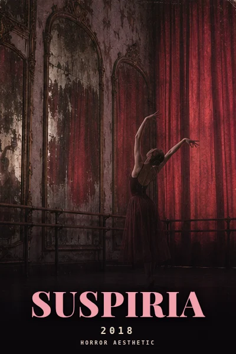

СуспирияSuspiria (2018)
Режиссёр: Лука Гуаданьино · Ведьмы, Арт-хаус, РемейкDirector: Luca Guadagnino · Witches, Arthouse, Remake
⚠ Тяжёлые сценыDisturbing scenes
Американская танцовщица приезжает в берлинскую академию, где идёт ведьмина работа.An American dancer arrives at a Berlin academy where witchcraft is at work.
Сюзи Бэннион приезжает в 1977 году в берлинскую школу танца под руководством мадам Бланк. Преподаватели не похожи на преподавателей, танец становится ритуалом, а за стенами города гремят теракты.
Гуаданьино делает не римейк фильма Ардженто, а ответ на него: приглушённые краски, длинные сцены, историческая тревога. Хореография Сюзи и её дуэт с мадам Бланк, которую играет Тильда Суинтон, превращает ужас в танец.
Музыка Тома Йорка тонкая и тихая, а не оркестровая, и это работает. Длина в два с половиной часа и шесть актов с эпилогом утомляют, но финал, жуткий и странно красивый, стоит ожидания.
Для тех, кто готов к арт-хаусному ужасу. Любителям оригинала Ардженто может не понравиться: это совсем другая история.
In 1977 Susie Bannion arrives at a Berlin dance school run by Madame Blanc. The teachers do not look like teachers, the dance turns into a ritual, and outside the city terrorist attacks rumble.
Guadagnino does not make a remake of Argento's film but an answer to it: muted colours, long scenes, historical anxiety. Susie's choreography and her duet with Madame Blanc, played by Tilda Swinton, turn horror into dance.
Thom Yorke's music is subtle and quiet rather than orchestral, and it works. The two-and-a-half-hour length and six acts with an epilogue tire, but the finale, ghastly and strangely beautiful, is worth the wait.
For those ready for arthouse horror. Fans of Argento's original may dislike it: it is a quite different story.